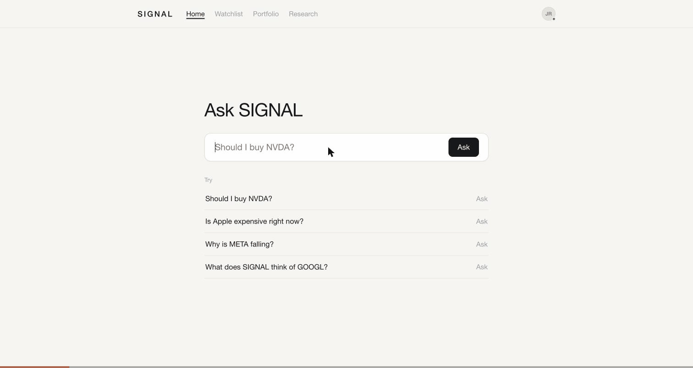

Portfolio / AI Engineering / Building SIGNAL
Building SIGNAL
Complex underneath, effortless on the surface.
A consumer investing companion. Ask whether to hold a position over the next quarter and get an answer first: the stance, the confidence, three reasons, two risks, and what would change the call. Underneath, a quantitative score computed in code and a model-written bull and bear case are kept deliberately separate, and where they disagree the disagreement is shown rather than averaged away.
My one flagship independent project. It serves as the product I am building, the engineering portfolio I am judged on, the place coursework gets applied, and the subject of a public build log. One product, one codebase, one journey.
Live app ↗ Repository ↗ Engineering detail
The research engine, the evaluation suite, the daily export pipeline and the prediction resolver are all built and running. The front end reads published runs for a watchlist of seven tickers. 137 predictions are logged on a three-month horizon; the earliest matures on 23 December 2026, so there is no accuracy claim yet because none of them has come due.
See it work
A real walkthrough of the live app, recorded 26 October 2026. One question, the answer first, then the working underneath.

- Ask in plain language: should I hold NVDA for the next three months?
- The answer comes first: a stance, the share of checks in agreement, and a rough expectation.
- Below it, the quant band computed in code sits beside the narrative lean from the memos, with a line on where each could be wrong.
- The Research tab shows the case for and the case against, every claim labelled sourced and carrying the source it came from.
Roadmap
Four stages, no dates. A stage advances on evidence, not on a calendar.
Stage 1 — Ship
Finish the smallest useful version.
The engine, the evals, the export pipeline and the calibration code are done. What is missing before this is genuinely useful is a resolved track record, and that is now a date rather than a task: the resolver fetches the price at each horizon end, computes the realised return and reports hit rates by quant band, narrative lean and agreement. Running it today returns 0 matured and 137 pending, which is the correct answer two months early.
Next: Run the calibration from 23 December 2026, when the first predictions come due, and publish the result.
Stage 2 — Validate
Get real users and watch what they actually do.
No users yet. The first question is whether anyone returns after one answer, and which part of the output they read.
Stage 3 — Monetize
Test willingness to pay.
Only meaningful once something is retained. The natural paywall is fresh research for tickers outside the published watchlist, because that is also where the real cost sits.
Stage 4 — Improve
Strengthen reliability, performance and usability on evidence.
Driven by what users and the resolved track record expose, not by what is technically interesting.
Development timeline
A milestone is marked complete only when something in the repository or the live app backs it.
Monthly engineering blog
No monthly entries published yet. The first one covers the month the prediction log gets resolved against real outcomes.
Video updates
No video updates published yet.
Product and business
Written down so they can be tested and so I can be held to them.
- Target customer
- A retail investor who holds a handful of individual positions, reads some financial news, and wants a second opinion before changing a position. Not a day trader and not a professional analyst.
- Problem
- Deciding whether to hold means reconciling valuation, momentum, risk, balance sheet, macro and the filings at once. Most consumer tools answer with one confident score and hide the uncertainty, so a user cannot tell when the tool is guessing.
- Core value
- An answer the user can interrogate: a number computed in code that no model can argue with, a stated case for and against, every claim marked sourced or not, and a visible flag when the quantitative view and the narrative view disagree.
- Competing products
- Broker research pages, Seeking Alpha, Simply Wall St, Finviz, and the growing set of large-language-model stock chatbots. The nearest comparisons are the ones that show a scored breakdown; the gap is that few of them separate the model's reasoning from the number or expose disagreement.
- Monetization options
- A subscription for fresh research on arbitrary tickers, with the free tier limited to the published watchlist.
A paid tier for tracking a personal watchlist with alerts when a stance or a kill criterion changes.
One-off deep reports on a named company. - Operating costs
- Today: effectively zero. Static hosting on GitHub Pages, free-tier market data behind a Cloudflare Worker, and free-tier models through OpenRouter. The first real cost appears when arbitrary tickers need a hosted API and paid model calls.
- Smallest useful version
- What exists now plus a resolved track record: a user can ask about a covered company, see the stance with its reasoning, and see how previous calls actually turned out.
- First users
- The build-in-public log itself, plus posting resolved calls once there is a track record worth showing. No paid acquisition until the product retains anyone.
Every revenue and market statement here is an untested hypothesis. SIGNAL has no users, no revenue, and no validated demand.